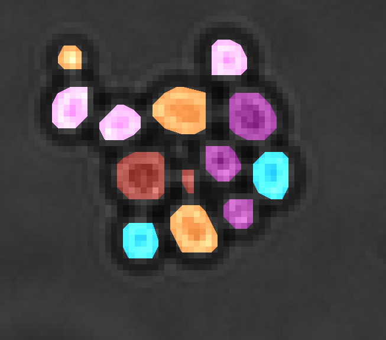

Master thesis project at Chalmers analysing microscopy time-laps data of growing yeast cells. In this project I learned a lot about image analysis and available tools like OpenCV and Scikit-Learn. But also how to manage larger projects and report regularly to an employer.
Python, OpenCV, Scikit-Learn, Keras, TensorFlow, Tkinter
